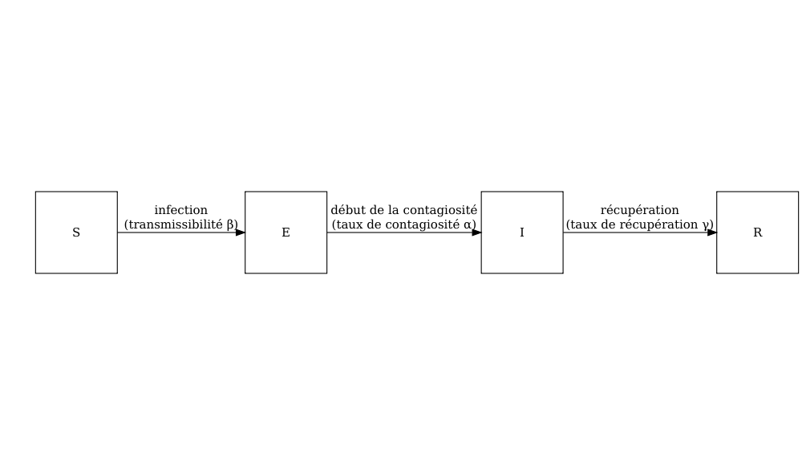
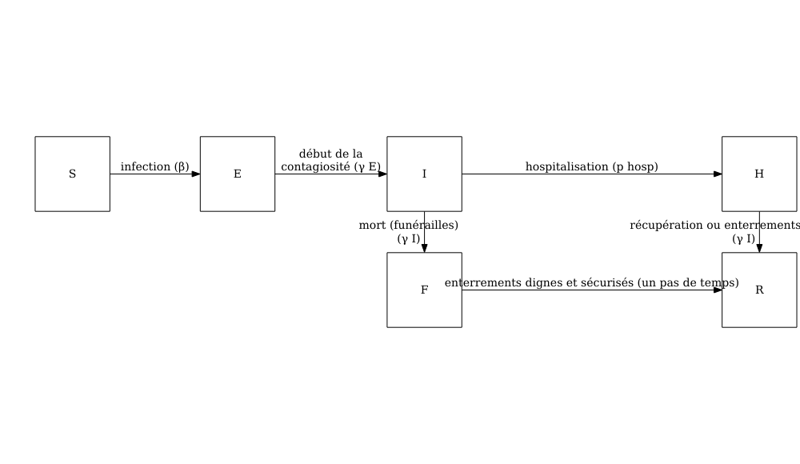
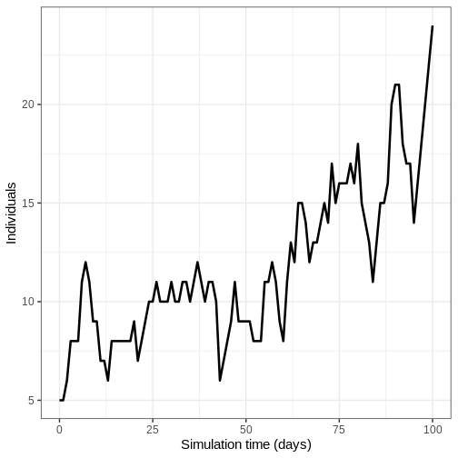
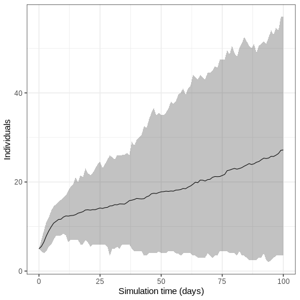

Choisir un modèle approprié
Dernière mise à jour le 2026-04-14 | Modifier cette page
Durée estimée : 30 minutes
Vue d'ensemble
Questions
- Comment choisir un modèle mathématique approprié pour bien faire ma tâche d’analyse ?
Objectifs
- Comprendre les exigences du modèle pour une question de recherche spécifique
::::::::::::::::::::::::::::::::::::: prereq
- Compléter le tutoriel Simuler la transmission :::::::::::::::::::::::::::::::::
Introduction
Il existe des modèles mathématiques pour différentes infections, interventions et schémas de transmission qui peuvent être utilisés pour répondre à de nouvelles questions. Dans ce tutoriel, nous apprendrons à choisir un modèle existant pour accomplir une tâche donnée.
L’objectif de ce tutoriel est de comprendre les modèles existants afin de décider s’ils sont appropriés pour une question donnée.
Choisir un modèle
Lorsqu’il s’agit de choisir le modèle mathématique à utiliser, un certain nombre de questions se posent :
Il se peut qu’un modèle existe déjà pour la maladie que vous étudiez, ou qu’il existe un modèle pour une infection dont les voies de transmission et les caractéristiques épidémiologiques sont similaires et qui peut être adapté. Par exemple, les maladies ayant des voies de transmission similaires (par exemple, transmission par voie aérienne, par gouttelettes ou par contact) et une histoire naturelle similaire (par exemple, période d’incubation, période infectieuse) peuvent utiliser des structures de modèle similaires.
Les structures des modèles diffèrent en fonction de l’ampleur et de la nature de l’épidémie. Lorsque le nombre d’infections simulées est faible, la variation stochastique (c’est-à-dire le caractère aléatoire que nous pouvons définir mathématiquement) des résultats peut avoir une incidence significative sur le déclenchement ou non d’une épidémie. Les épidémies localisés peuvent être mieux modélisées à l’aide d’approches stochastiques afin de saisir l’incertitude de la dynamique de transmission précoce. Les épidémies à plus grande échelle, peuvent souvent être modélisées efficacement à l’aide d’approches déterministes, car la variation stochastique devient moins importante par rapport à la dynamique globale.
Le résultat d’intérêt est généralement une quantité mesurable dérivée du modèle mathématique. Il peut s’agir de
- le nombre d’infections au fil du temps
- Le nombre maximal d’hospitalisations
- Le nombre total de cas de maladies graves
- L’ampleur finale de l’épidémie
- Le moment des pics épidémiques
Par exemple, directes ou indirecte, par voie aérienne ou à transmission vectorielle.
Pour une même infection ou un même type d’épidémie, il peut y avoir des différences subtiles dans les structures des modèles, qui peuvent passer inaperçues si l’on n’étudie pas les équations. Par exemple, les paramètres de transmissibilité peuvent être spécifiés sous forme de taux ou de probabilités. Si vous souhaitez utiliser les valeurs des paramètres d’autres modèles publiés, vous devez vérifier que la transmission est formulée de la même manière.
Il se peut que nous nous intéressions aux interventions telles que la vaccination, la distanciation physique ou les programmes de traitement. Les capacités d’intégration des interventions varient d’un modèle à l’autre :
- Certains modèles peuvent simuler des interventions continues (par exemple, des programmes de vaccination délivrés en continu).
- D’autres traitent les interventions discrètes (par exemple, les fermetures ponctuelles d’écoles).
- Certains modèles ne comprennent aucune fonctionnalité permettant de modéliser les interventions.
Nous discutons des interventions en détail dans le tutoriel Modélisation des interventions.
Modèles disponibles en {epidemics}
Le package R {epidemics} contient des fonctions
permettant d’exécuter les modèles existants. Pour plus de détails sur
les modèles disponibles, consultez le package Guide
de référence des “Fonctions de modèle”. Tous les noms des fonctions
des modèles commencent par model_*(). Pour apprendre
comment exécuter les modèles dans R, lisez le document suivant Vignettes
sur les “Guides pour les modèles de la bibliothèque”.
Quel modèle ?
On vous a demandé d’étudier la variation du nombre de personnes infectieuses dans les premières phases d’une épidémie d’Ebola.
Parmi les modèles suivants, lequel serait le plus approprié pour cette tâche ?
model_default()model_ebola()
Réfléchissez aux questions suivantes :
Liste de vérification
- Quelle est l’infection ou la maladie en question ?
- Avons-nous besoin d’un modèle déterministe ou stochastique ?
- Quel est le résultat qui nous intéresse ?
- Des interventions seront-elles modélisées ?
- Quelle est l’infection ou la maladie concernée ? Ebola
- Faut-il un modèle déterministe ou stochastique ? Un modèle stochastique nous permettrait d’étudier les variations au cours des premières phases de l’épidémie
- Quel est le résultat qui vous intéresse ? Nombre d’infections
- Des interventions seront-elles modélisées ? Non
model_default()
Un modèle SEIR (S: susceptible, E: exposé; I: infectieux; R: récupéré) déterministe avec une transmission directe spécifique à l’âge.

Le modèle est capable de simuler une épidémie de type Ebola, mais comme il est déterministe, nous ne sommes pas en mesure d’étudier les variations stochastiques au cours des premières phases de l’épidémie.
model_ebola()
Un modèle stochastique SEIHFR (Susceptible, Exposé, Infectieux, Hospitalisé, Funéraire, Retiré) développé spécifiquement pour la maladie à virus Ebola. Le modèle comprend des compartiments pour les états Hospitalisé et Funéraire, qui sont essentiels pour comprendre la dynamique de transmission du virus Ebola en raison du risque élevé de transmission dans les établissements de soins de santé et pendant les pratiques funéraires traditionnelles. Le modèle présente une stochasticité dans les temps de passage entre les états, qui sont modélisés avec des distributions d’Erlang.
Les paramètres clés affectant la transition entre les états sont les suivants :
- \(R_0\) le nombre de reproduction de base,
- \(\rho^I\) la période infectieuse moyenne,
- \(\rho^E\) la période préinfectieuse moyenne,
- \(p_{hosp}\) la probabilité d’être transféré dans le compartiment hospitalisé.
**Note : la relation fonctionnelle entre la période préinfectieuse (\(\rho^E\)) et le taux de transition entre exposé et infectieux (\(\gamma^E\)) est la suivante \(\rho^E = k^E/\gamma^E\) où \(k^E\) est le paramètre de forme de la distribution d’Erlang. De même, pour la période infectieuse \(\rho^I = k^I/\gamma^I\). Pour plus de détails sur la formulation du modèle stochastique, vous pourriez regarder la section sur les Modèle à temps discret de la maladie à virus Ebola dans la vignette “Modélisation des réponses à une épidémie stochastique de virus Ebola”. **

Le modèle comporte des paramètres supplémentaires décrivant le risque de transmission dans les hôpitaux et les les funérailles :
- \(p_{ETU}\) la proportion de cas hospitalisés contribuant à l’infection de personnes sensibles (ETU = unités de traitement du virus Ebola),
- \(p_{funeral}\) la proportion de funérailles au cours desquelles le risque de transmission est le même que pour les personnes infectieuses dans la communauté.
Ce modèle étant stochastique, il constitue le choix le plus approprié pour étudier la variation du nombre de personnes infectées au cours des premières phases d’une épidémie d’Ebola.
Devrais-je utiliser un modèle mathématique ?
Les modèles mathématiques peuvent être utilisés pour générer des trajectoires de maladie, qui peuvent ensuite être utilisées pour calculer la taille finale de l’épidémie. Si seule la taille finale vous intéresse, il est possible d’utiliser la théorie mathématique pour calculer directement cette quantité, sans avoir à simuler le modèle complet puis déterminer le nombre d’individus infectés. Ces calculs mathématiques sont effectués à l’aide de fonctions R dans le paquetage finalsize.
L’avantage d’utiliser finalsize est que moins de
paramètres sont nécessaires. Il suffit de définir la transmissibilité et
la susceptibilité de la population, ainsi qu’une matrice de contacts si
pertinent, plutôt que des paramètres tels que la période infectieuse,
qui sont nécessaires dans le cadre du package {epidemics} pour simuler
la dynamique dans le temps. Consultez la page vignettes
du paquet pour plus d’informations sur l’utilisation de
finalsize pour calculer la taille de l’épidémie.
Défi : Analyse de l’épidémie d’Ebola
Exécution du modèle
Vous avez été chargé de générer les trajectoires initiales d’une
épidémie d’Ebola en Guinée. En utilisant model_ebola() et
les informations détaillées ci-dessous, effectuez les tâches suivantes
:
- Exécutez le modèle une fois et représentez graphiquement le nombre d’individus infectieux au fil du temps.
- Exécutez le modèle 100 fois et représentez la moyenne, les quantiles supérieurs et inférieurs à 95 % du nombre d’individus infectieux en fonction du temps.
- Taille de la population : 14 millions
- Nombre initial d’individus exposés : 10
- Nombre initial d’individus infectieux : 5
- Durée de la simulation : 120 jours
- Valeurs des paramètres :
-
\(R_0\) (
r0) = 1.1, -
\(p^I\)
(
infectious_period) = 12, -
\(p^E\)
(
preinfectious_period) = 5, - \(k^E=k^I = 2\),
-
\(1-p_{hosp}\)
(
prop_community) = 0.9, -
\(p_{ETU}\) (
etu_risk) = 0.7, -
\(p_{funeral}\)
(
funeral_risk) = 0.5
-
\(R_0\) (
R
# définir la taille de la population
population_size <- 14e6
E0 <- 10
I0 <- 5
# préparer les conditions initiales sous forme de proportions.
initial_conditions <- c(
S = population_size - (E0 + I0), E = E0, I = I0, H = 0, F = 0, R = 0
) / population_size
guinea_population <- population(
name = "Guinea",
contact_matrix = matrix(1), # note dummy value
demography_vector = population_size, # 14 million, no age groups
initial_conditions = matrix(
initial_conditions,
nrow = 1
)
)
Adaptez le code de la section prise en compte de l’incertitude
- Exécutez le modèle une fois et représentez le nombre d’individus infectieux en fonction du temps.
R
output <- model_ebola(
population = guinea_population,
transmission_rate = 1.1 / 12,
infectiousness_rate = 2.0 / 5,
removal_rate = 2.0 / 12,
prop_community = 0.9,
etu_risk = 0.7,
funeral_risk = 0.5,
time_end = 100,
replicates = 1 # replicates argument
)
output %>%
filter(compartment == "infectious") %>%
ggplot() +
geom_line(
aes(time, value),
linewidth = 1.2
) +
scale_y_continuous(
labels = scales::comma
) +
labs(
x = "Simulation time (days)",
y = "Individuals"
) +
theme_bw(
base_size = 15
)

- Exécutez le modèle 100 fois et représentez la moyenne, les quantiles supérieurs et inférieurs à 95 % du nombre d’individus infectieux en fonction du temps.
Nous exécutons le modèle 100 fois avec les même valeurs des paramètres.
R
output_replicates <- model_ebola(
population = guinea_population,
transmission_rate = 1.1 / 12,
infectiousness_rate = 2.0 / 5,
removal_rate = 2.0 / 12,
prop_community = 0.9,
etu_risk = 0.7,
funeral_risk = 0.5,
time_end = 100,
replicates = 100 # replicates argument
)
output_replicates %>%
filter(compartment == "infectious") %>%
ggplot(
aes(time, value)
) +
stat_summary(geom = "line", fun = mean) +
stat_summary(
geom = "ribbon",
fun.min = function(z) {
quantile(z, 0.025)
},
fun.max = function(z) {
quantile(z, 0.975)
},
alpha = 0.3
) +
labs(
x = "Simulation time (days)",
y = "Individuals"
) +
theme_bw(
base_size = 15
)

Points clés
- Les modèles mathématiques existants doivent être sélectionnés en fonction de la question de recherche.
- Il est important de vérifier qu’un modèle repose sur des hypothèses appropriées concernant la transmission, le potentiel épidémique, les résultats et les interventions.